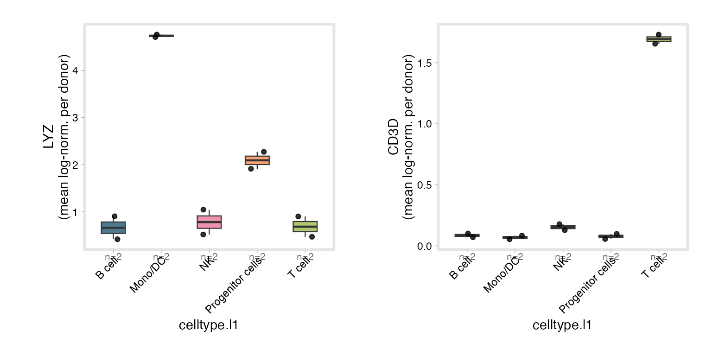

scSidekick - Large Datasets: BPCells, Sketch & Pseudobulk
14_large_data.RmdOverview
Atlas-scale objects (hundreds of thousands to millions of cells) break the usual “load everything into memory” assumption. scSidekick is built to scale in two complementary ways:
-
Streaming heavy functions - feature plots,
pseudobulk aggregation, and pathway scoring read BPCells / on-disk and
Sketchassays lazily. Only the genes (or cells) you ask for are pulled off disk, so the same one-liners run on a 2-million-cell object without materialising it. - Aggregating to a tractable unit - collapse millions of cells to per-sample pseudobulk profiles, then analyse those with fast, robust, sample-level statistics.
1. BPCells & on-disk assays
With a BPCells-backed object the count matrix lives on disk, not in RAM. scSidekick’s plotting and aggregation functions detect the lazy matrix and stream through it - they subset the requested rows before materialising, so memory stays flat regardless of object size.
library(BPCells)
# Write a 10x matrix to a BPCells on-disk directory (once):
mat <- open_matrix_10x_hdf5("filtered_feature_bc_matrix.h5")
write_matrix_dir(mat, dir = "bp_counts")
# Build a Seurat object whose counts are the on-disk matrix:
counts <- open_matrix_dir("bp_counts")
obj <- CreateSeuratObject(counts) |>
NormalizeData() |>
FindVariableFeatures() |>
ScaleData() |>
RunPCA() |>
RunUMAP(dims = 1:30)
obj <- PrepObject(obj,
variables = c("Sample", "Group", "seurat_clusters"),
group.by = "seurat_clusters",
output_dir = "./Figures")
# These behave exactly as on an in-memory object - but only the requested
# genes are read off disk for each panel:
PlotFeaturePlots(obj, features = c("CD3E", "LYZ", "NKG7"), split.by = "Sample")
GroupHeatmap(obj, features = marker_genes)2. The Sketch workflow
For interactive work on millions of cells, Seurat v5’s
SketchData() keeps a representative subset “in memory”
while the full data stays on disk. scSidekick functions work on either
assay - sketch for fast iteration, full for the final figure.
obj <- SketchData(obj, ncells = 50000, method = "LeverageScore",
sketched.assay = "sketch")
# Iterate fast on the sketch assay ...
DefaultAssay(obj) <- "sketch"
PlotFeaturePlots(obj, features = "CD3E", split.by = "Sample")
# ... then project back to the full dataset for the publication figure.
# (For pseudobulk / pathway analysis on sketched objects, pass assay = "RNA"
# explicitly so aggregation uses the full data, not the sketch.)3. Pseudobulk: collapse cells to samples
Pseudobulk is the most robust way to analyse large multi-sample
studies: sum (or average) each gene within each sample, then treat
samples as replicates. ComputePseudobulk() streams the
matrix once (BPCells-safe) and caches the result in the object;
PlotPseudoBulk() draws per-gene, per-group profiles with
one point per donor.
bmcite <- ComputePseudobulk(bmcite,
group.by = c("donor", "celltype.l1"),
genes = c("LYZ", "CD3D", "NKG7", "CD79A", "S100A8"),
verbose = FALSE)
PlotPseudoBulk(bmcite,
features = c("LYZ", "CD3D"),
group.by = "celltype.l1",
donor.by = "donor")
With more samples you can add cross-group statistics directly:
PlotPseudoBulk(obj,
features = "APOE",
group.by = "Cognitive.Status",
donor.by = "Donor.ID",
split.by = "CellType",
exclude = list(Cognitive.Status = "Reference"),
add_stats = TRUE,
ref_group = "No dementia",
min_cells = 10)4. Pathway analysis at scale
Two routes, both designed for big objects:
Donor-level GSEA - RunGSEA_pseudobulk()
Pseudobulk -> per-contrast differential expression -> GSEA against Hallmark / KEGG / Reactome / WikiPathways, plus optional ssGSEA. Sample-level statistics mean the result isn’t inflated by cell count.
RunGSEA_pseudobulk(obj,
group.by = "CellType",
sample.by = "Donor.ID",
contrast.by = "Cognitive.Status",
contrasts = list(Dementia_vs_Control = "Dementia - No dementia"),
species = "human",
output_dir = "./Figures/Pathways_pseudobulk")Per-cell ssGSEA - RunSCssGSEA()
When you want a pathway score per cell (e.g. to overlay on
the UMAP), RunSCssGSEA() computes single-cell ssGSEA and is
BPCells/sketch-aware (use assay = "RNA" /
"sketch" as appropriate).
RunSCssGSEA(obj,
group.by = "CellType",
gene_set_library = "H", # MSigDB Hallmark
output_dir = "./Figures/ssGSEA")Tips for big objects
- Keep counts on disk with BPCells; scSidekick streams them.
- Use a sketch assay for interactive iteration, the
full assay for final figures - and pass
assay = "RNA"explicitly to pseudobulk/pathway functions so aggregation uses the full data. - Prefer pseudobulk (
ComputePseudobulk->PlotPseudoBulk,RunGSEA_pseudobulk) for differential and pathway analysis across samples - it’s both faster and statistically sounder than per-cell tests.
See also
- Vignette 08:
RunGSEA()- cell-level pathway analysis (keyword search, leading-edge visualization) - Vignette 09:
RunGSEA_pseudobulk()- full pseudobulk GSEA with limma-voom - Vignette 13:
PlotMetaSummary()- donor-level summaries for large cohorts - Vignette 04:
PlotFeaturePlots()- the streaming feature-map function
Session info
## R version 4.3.1 (2023-06-16)
## Platform: aarch64-apple-darwin20 (64-bit)
## Running under: macOS 15.6
##
## Matrix products: default
## BLAS: /Library/Frameworks/R.framework/Versions/4.3-arm64/Resources/lib/libRblas.0.dylib
## LAPACK: /Library/Frameworks/R.framework/Versions/4.3-arm64/Resources/lib/libRlapack.dylib; LAPACK version 3.11.0
##
## locale:
## [1] en_US.UTF-8/en_US.UTF-8/en_US.UTF-8/C/en_US.UTF-8/en_US.UTF-8
##
## time zone: America/Chicago
## tzcode source: internal
##
## attached base packages:
## [1] stats graphics grDevices utils datasets methods base
##
## other attached packages:
## [1] stxBrain.SeuratData_0.1.2 pbmc3k.SeuratData_3.1.4
## [3] ifnb.SeuratData_3.1.0 bmcite.SeuratData_0.3.0
## [5] SeuratData_0.2.2 Seurat_5.2.1
## [7] SeuratObject_5.1.0 sp_2.1-3
## [9] scSidekick_0.1.0
##
## loaded via a namespace (and not attached):
## [1] RColorBrewer_1.1-3 rstudioapi_0.16.0 jsonlite_2.0.0
## [4] magrittr_2.0.3 spatstat.utils_3.1-0 farver_2.1.2
## [7] rmarkdown_2.29 fs_1.6.6 ragg_1.4.0
## [10] vctrs_0.6.5 ROCR_1.0-11 spatstat.explore_3.2-7
## [13] htmltools_0.5.8.1 sass_0.4.10 sctransform_0.4.1
## [16] parallelly_1.37.1 KernSmooth_2.23-22 bslib_0.9.0
## [19] htmlwidgets_1.6.4 desc_1.4.3 ica_1.0-3
## [22] plyr_1.8.9 plotly_4.10.4 zoo_1.8-14
## [25] cachem_1.1.0 igraph_2.0.3 mime_0.13
## [28] lifecycle_1.0.4 pkgconfig_2.0.3 Matrix_1.6-5
## [31] R6_2.6.1 fastmap_1.2.0 fitdistrplus_1.1-11
## [34] future_1.33.2 shiny_1.11.1 digest_0.6.37
## [37] colorspace_2.1-1 patchwork_1.3.1 tensor_1.5
## [40] RSpectra_0.16-1 irlba_2.3.5.1 textshaping_0.3.7
## [43] labeling_0.4.3 progressr_0.14.0 spatstat.sparse_3.0-3
## [46] httr_1.4.7 polyclip_1.10-6 abind_1.4-8
## [49] compiler_4.3.1 withr_3.0.2 fastDummies_1.7.3
## [52] highr_0.10 MASS_7.3-60.0.1 rappdirs_0.3.3
## [55] tools_4.3.1 lmtest_0.9-40 otel_0.2.0
## [58] httpuv_1.6.16 future.apply_1.11.2 goftest_1.2-3
## [61] glue_1.8.0 nlme_3.1-164 promises_1.5.0
## [64] grid_4.3.1 Rtsne_0.17 cluster_2.1.6
## [67] reshape2_1.4.4 generics_0.1.4 gtable_0.3.6
## [70] spatstat.data_3.0-4 tidyr_1.3.1 data.table_1.15.4
## [73] spatstat.geom_3.2-9 RcppAnnoy_0.0.22 ggrepel_0.9.6
## [76] RANN_2.6.1 pillar_1.11.0 stringr_1.5.1
## [79] spam_2.10-0 RcppHNSW_0.6.0 later_1.4.2
## [82] splines_4.3.1 dplyr_1.1.4 lattice_0.22-6
## [85] survival_3.5-8 deldir_2.0-4 tidyselect_1.2.1
## [88] miniUI_0.1.1.1 pbapply_1.7-2 knitr_1.45
## [91] gridExtra_2.3 scattermore_1.2 xfun_0.52
## [94] matrixStats_1.2.0 stringi_1.8.7 lazyeval_0.2.2
## [97] yaml_2.3.10 evaluate_0.23 codetools_0.2-20
## [100] tibble_3.3.0 cli_3.6.5 uwot_0.1.16
## [103] xtable_1.8-4 reticulate_1.35.0 systemfonts_1.0.6
## [106] jquerylib_0.1.4 dichromat_2.0-0.1 Rcpp_1.1.0
## [109] globals_0.16.3 spatstat.random_3.2-3 png_0.1-8
## [112] parallel_4.3.1 pkgdown_2.1.3 ggplot2_3.5.2
## [115] dotCall64_1.1-1 listenv_0.9.1 viridisLite_0.4.2
## [118] scales_1.4.0 ggridges_0.5.6 purrr_1.0.4
## [121] crayon_1.5.2 rlang_1.1.6 cowplot_1.2.0.9000